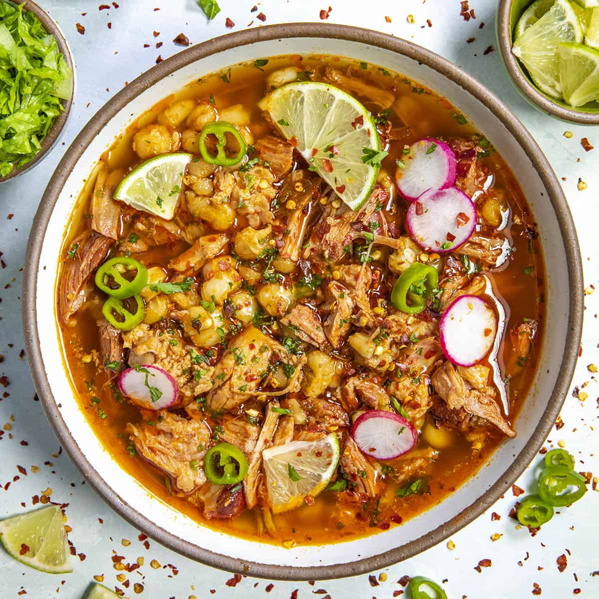

The recipe of Pozole

The Pozole is a traditipnal mexican soup where is used a special white corn
and it hs a lot of different vegetables, so it is very healthy
- Pozole corn
- Cow meat
- Garlic
- Onion
- Coriander
- Lettuce
- Radish
- Avocado
- Tomate
- Chili Chipotle, Guahillo
- Lemon
- Cook the corn and the meat for 3 minutes in an express cooker.
- Cook in boiling water for a few minutes tha chiles.
- Triturte the chiles with the onion and garlic.
- When the corns are fone put our triturated salsa in the water of the corn and the meat
- Sirve the soup and put in bowls the different fresh vegetables and everyone should put them in their hot soup.
- Enjoy!